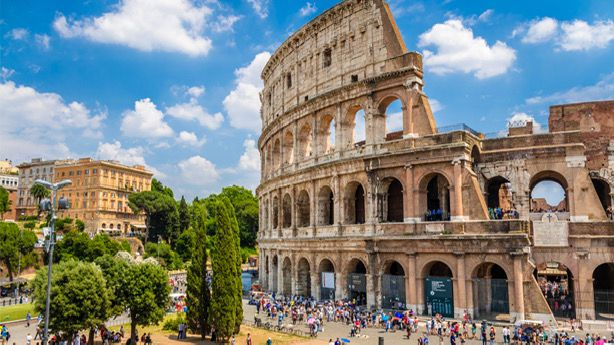

Le Colisée
Présentation
Le Colisée (Colosseo en italien), à l'origine amphithéâtre Flavien (amphitheatrum Flavium en latin), est un immense amphithéâtre ovoïde situé dans le centre de la ville de Rome, entre l'Esquilin et le Cælius, le plus grand jamais construit dans l'Empire romain. Il est l'une des plus grandes œuvres de l'architecture et de l'ingénierie de l’empire romain.Il a été construit entre 72 ap. J.-C.-80 ap. J.-C. Pouvant accueillir probablement 50 000 spectateurs (les estimations plus anciennes de 80 000 spectateurs.
Popularité et Influence
le Colisée est l’un des sites les plus visités d’Italie, attirant des millions de voyageurs chaque année. Ces derniers sont émerveillés par ce monument historique qui leur permet de revivre l’époque de l’empire romain. Le Colisée, par sa simple présence, continue de promouvoir l’image de Rome et de l’Italie dans le monde entier.
Titres
Depuis 1980, il est classé au Patrimoine Mondial de l'UNESCO et depuis 2007, il fait partie des 7 nouvelles Merveilles du monde.